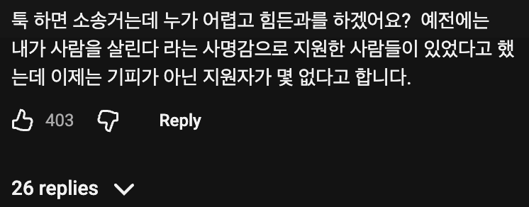

지원할사람이 없으면 의대증원해서 사람을 늘리면 되잖아
아~ 그건 또 안돼? ㅋㅋ
어어 환자 목숨 인질삼아 파업은 하지말아다오~
응급을 대표로 필수의료는 애초에 적자라서 사람을 안 뽑는다고.
의대 증원은 찬성인데,
적어도 이게 필수의료 문제 해결책은 아니라고.
미용개방하고 필수의료 쪽 수가랑 지원을 확대하면 되는데 안하잖아~
공감함
ㅋㅋㅋ 군간부 부족한데 사관학교 정원늘리면 해결됨?
의사는 줄서서 너도나도 하겠다고 난리고
군인은 너나 하라고 런하는데 비교가 잘못됐으요~
필수과도 줄서서하겠다고 난리임? 있던사람도 다 도망가는데
증원 늘어나서 의사 공급 많아져봐 그럼 줄서게 돼잇음 그거라도 안하면 아예 다른데에도 못가거든
적은 인원이 “골라서” 갈서 있으니까 필수과에 사람이 없는거임 골라갈수있으면 좋소 왜들어가? 다들 삼성 하이닉스 가지
근데 그렇게 되면 의사들 대우가 현재보다 안좋아질것 같으니 반대하지?
ㅋㅋㅋㅋㅋ 화이팅이다 국군도 재정같은 비전투병과는 줄서있다는걸 잊지말고~
미용같은 의사같지도않은것들 밥그릇을 박살내야 필수의료로 가지 ㅋㅋ 애도알겠다
저런 사람이 돈을 많이 받아야지
저런 사람들 돈 많이 받게 네 건강보험료 올리자 그러면 싫잖아?
꼭 필요하면 더 낼 의사는 있음. 근데 일단 의사들 중 생명을 다루는 사람들이 돈을 더 받고, 좀 편하게 일하는 의사들은 덜 받는 구조가 되는게 맞다고 본다.
의룡인가 만화중에 심장관련된 수술하는 만화 잼썻는디
멋잇다고 생각햇는데 현실은 팍팍한가보네
미용을 박살낼게 아니라 의사가 미용을 하면 세금을 많이 거둬야지
솔직히 저런거 명예로 움직이는건데 나라가 소짱2깨처럼 되더니 불만만 많고 명예를 모르고 돈만 알면서 저급하게 되버림;
저렇게 개선할게 많은데 의협은 증원 얘기 나올때만 움직이네
대학병원 교수(전문의)하고 미용 전공의가 월급 비슷하던데
미용 쪽 잡고 그 돈 필수의료쪽으로 투자되도록 개선해야지
미용은 비급여라서 건보랑 상관없지 않음? 건너건너 의사소득 영향이면 몰라도
걍 아예 모든 미용의료에 담배나 술처럼 추가세금 붙여버리면 안됨? 10만원짜리 시술이면 세금만 10만원 더 붙여버린다던가.
비필수의료 수익을 낮추거나(공급증가 및 미용개방)
필수의료 수익을 높이거나(수가 개선 등)
둘다했으면
수가 개선은 단 한번도 제대로 된 적이 없으니 모든 의사들이 포기 상태임.
그러니 의료 수가 안 받는 (피부, 미용, 각종 비급여) 분야로 진출하거나
보험진료가 그다지 많지 않은, 또는 비급여 치료를 많이 섞을 수 있는 분야로 (정형외과, 통증의학 등) 진출하는 것임
게대가 필수의료, 비필수의료 구분이 명확한 것도 아님.
대놓고 미용하는 것 말고는 대체 비필수의료가 어디 있음? 골절 보는 정형외과는 필수의료 아님?
ㅋㅋ 문제는 수가.. 이거 보면 개욱긴 정책참여는 의사긴한데 죄다 개인로컬이고 매년 수가상승률보면 종병 병원 1%대면 의원급만 2%이상에 지금 보면 진찰료차이도 병의원은 차이없음. 상급종병은 어려운질환 외 본인부담 80-90% 해버려서 확나긴해도...의원은 또 만65세이상 진찰룢1500고정ㅋㅋ ㅎㄷㄷ하다요즘. 필수의료 필수의료해도 개인로컬병원급은 하고싶어도 수가나 인력땜에 나서질못함. 저런거 수술할려면 장비나 수술실인력 돌리는데 드는비용이 넘사라...정부지원나오는 상급종병아님 못하지
내 생각엔 저런 의사야말로 사라져야 하는 존재임
여기 댓글들만 봐도 알 수 있음. 아직도 멍멍소리 하는 사람들이 천지임
저 분이 저기 버티고 있으니까 뭐, 그럭저럭 돌아가네~ 하면서 냅두는거
조선식 해결방법으로는, 더 개판나봐야 정신차림
아주대 소아응급실 의사들도 봐라, 사직한다더니 쇼만 디립다 하고 뭐 다 앉아서 자리 지키고 있잖아?
어줍잖은 사명감 같은 소리 다 자기 만족일 뿐임. 버틸만 하니 버티는 거지
나 같으면 압수수색 당하고 ㅈㄹ 떠는거 보면 곧바로 사표내고 담날부터 출근 안했음.
정말 x 같으면 알아서 그만두게 되어 있음
사직하고 그만두는 사람은 아무런 조건이며 말이 없다
그만두지 않을꺼니까 사직한다고 쇼 하는 것임
그래서 나라에서 나서서 인원 늘려주겠단느데 본인들이 늘리지말라고 지랄발광을 하는걸 어째 ㅋㅋ
인원이 늘어난다고 심장내과, 소아과 의사들이 늘어남? 지금은 쉬었음청년이 부족해서 지방 좃소, 조선소에서 외노자 쓰니?
아예안늘어나진 않음 0에 수렴한다고 생각하면 뭐 할말없고
선택율이 1프로면 100명일때1명이고 200명일때2명임
게다가 피부과 이런데 경쟁율이 엄청올라가는데 그럼 피부과로빠지는 사삼도 점점 줄어들거고
그래서 고작 100명 중 1명 더 늘리자고 그런짓을 해? ㅋㅋㅋ
착각하지마 의대 정원이 동결된거지 의사는 매년 3천명씩 쏟아지는데 그 중 심혈관내과 수련받는 의사가 30명이 된다 쳐도 저런 자리는 굳이 취직하거나 남으려고 하지 않음.
활동의사 총 숫자가 10년전과 비교해서 거의 3만명 가까이 늘었는데 오히려 저런 일 하려는 의사는 점점 줄어듦. 의사 수만 단순히 늘려서 해결될 일이었으면 진작에 해결되었어야 하지 않음? 계속 앵무새 같은 소리 할 꺼면 걍 꺼져라
왜 줄어드는가에대한 근본적인건 피부과 개원의가 너무 많이버니까 아님?
공급존나게 과잉하면 해결된다는거야
집값잡듯이 공급으로 조지면됨 피부과해도 가 쳐망하면 되는거야
그 쪽 분야는 공급은 이미 미친듯이 되고 있구요... 지금은 한방사들까지 진출해서 이미 레드오션 행 되는 추세인데
대체 뭐 얼마나 더 공급해야 해결이 될 것 같음? ㅋㅋㅋ
그리고 소위 그렇게 꿀 빠는 분야가 미용밖에 없음? 얘기했지 않음? 쉬었음청년이 수십만명이어도 걍 편의점 알바하고 말지 지방좃소, 지방 조선소 안간다니까?
공급으로 조지는 것도 어느 정도여야지 상식적인 수준에서 이해가 안됨? 의사라는 직업이 무슨 공장에서 찍듯이 늘릴 수 있는 존재라고 생각함?
공급과잉인데 평균 4억버나?? 아직 한참남았음 그래봐짜 비슷하게공부한 다른직업군에비해서 월등히 높아 그니까 공부 상위권이 다 의대로빠지는거고 갸들이 존나멍청해서 공급과잉인데 뛰어들어? 갸들이 너보다 멍청하다고 생각해?
니가 의사보다똑똑하다생각하면 니말이맞음
근데 아직도 니가말하는 그 포화되서 망해가는 시장에 제일똑똑한애들이 줄줄히 뛰어들고있음 너보다 한참 멍청해서
삼하닉 성과급만 십수억인데 4억? 많아보여?ㅋㅋ 그리고 그것도 잘 나가는 개원의 통계인데 무슨 의사 면허만 따면 다 그렇게 버는 줄 알어? 너 일하는 곳 사장이 월 가져가는거 알면 기절초풍하겠네 ㅋㅋ
그리고 너는 공급이 충분한지 아닌지가 고작 기준이 소득이냐? ㅋㅋ 그저 배아파리즘으로 쌉소리 하는거지.
야 대한민국에서 건국이후 단한번 나온 그 성과급 가지고 일반화? 미쳤니?? 뇌 괜찮아? 지금 의사들도 성과급10억나올줄알았으면 대부분 의사안했어
공급과 과잉이 충분한지 기준은 돈아니냐? 그럼 국토부가 다 너보다 멍청해서 집값잡는다고 공급뿌리냐 정부에서 존나 개멍청해서 쌀 생산많이되면 쌀 가격 안정시킬라고 매입해서 공급줄이냐고~~ 다 존나멍청한놈들이야?? ㅋㅋㅋ
갸들이 왜 피부과 가니 돈이지 당연히 이걸 왜 부정하는거지??
평균이 전반적인 수치를 보여주는거지 그럼뭘보여줌?? 너 괜찮아? 산수포기했어?
니는 무슨 창조경제냐 ㅋㅋㅋ 개웃기네
아니 무슨 극단적으로 소수만 피부과 개원해서 잘된다는 너의 주장이 맞다면 지금 의대 가는 병신들은 아이큐가 저능아라서 그 공부해서 피부과 개원하니?? 진짜 니가 그 의사들보다 1억배 똑똑해??? 갸들이 존나멍청해? 의대가는 병신들은 존나 모지리라서 그 바늘구멍 통과못하면 다 쳐망하는 피부과 가니??
서울대 법학과다니다가 피부과 개원한다고 수능다시보는 고학력병신들 보다 니가 더 똑똑해?? ㅋㅋㅋ 개들이 왜 의사한다고 수능다시보냐
니는 상식이 아주많이 부족한데 가르치려드는게 존나 문제임
시발 공급이 단가에 영향을 안미치면 한은에서 돈 무한이 계속 뽑아대면 되는데 왜 전세계가 다 존나멍청해서 돈을 대량생산 안하냐고 ㅋㅋㅋㅋㅋㅋㅋㅋㅋㅋ 시발 존나웃기네 공급존나하면되잖아 니말대로 영향을 못주면
그래서 필수의료 기피하는 현상이 단순히 의사의 공급이 문제가 아니라는 점을 여러번 설명하지 않았나? ㅎㅎ 니가 든 예시 중 집을 예로 들면 사람들이 전부 원하는 집은 서울에 있는 아파트인데 서울 아닌 지방에 디립다 집을 짓는다고 서울 아파트 가격이 떨어질까?
윗 본글과 같이 환자 생명을 살리면서 사명감 가지고 사는 의사들의 그 사명감이 박살난 상태인데 그럼 의사들이 그 다음으로 뭘 택하겠어? ㅎㅎ 당연히 금전적인 가치지. 피부미용 분야가 워낙 인풋 대비 아웃풋이 크니 많은 의사가 몰리는 것은 맞는데 거기 말고도 소위 "꿀 빠는" 분야는 많아. 의료분야가 피부미용 아니면 나머지는 전부 필수의료 분야겠니? 그리고 내가 언제 잘되는 소수 말고는 전부 망한다고 했어? ^^ 극단적인 비교 말고는 이해를 못 해?
그러니 단순 의사의 수를 늘리는 것은 밑 빠진 독에 물을 붓는것 마냥 한계가 있을 뿐 더러 지금 의사 직역 중 기피하는 곳은 다 그만한 이유가 있는데 그 모든 이유를 덮어놓고 미용, 증원 웅앵거리는게 맞음? ㅋㅋㅋ 앞서 말했듯이 미용 의원은 폭발적으로 이미 늘어났고 한방사들까지 진출해서 신규 진출은 망했다는 소리까지 나옴
개원의 봉직의 수련의 등등 의사의 직군 종류가 한두가지가 아닌데 개원의 통계만 굳이 인용하고 싶은 이유는 뭐... 충분히 이해가 감 ^^ 열등감에 휩싸여서 그저 죽창이나 찌르려는 너같은 부류가 아직도 남아있다는게 어찌보면 한탄스럽기도 한데
너같은 무지몽매한 사람들이 계속 죽창을 찔러주고 필수의료 분야가 더더더 망해봐야 정신을 차릴꺼니까 꼭 그렇게 계속 의까짓 하기를 바란다 ㅋㅋㅋ
단순히 공급문제는 아니지 근데 공급문제도 맞음 수가조정같은 다른것들은 즉시반영 가능한데 반영해도 10년 20년 뒤에 따라오는게 증원임
일단 증원부터 하고 다른정책을 같이가야지 딴거 다하고 증원만 하지말라는 니말도 말이안맞음
그냥 다른것들도 다 건드려야되는데 제일먼저 건드려야되는게 증원임
니가 잘되는 병원만잘되지 포화상태라서 ㅈ된다매 니가 극단을 예시든거고 나는 평균을 예시든건데 갑자기 말을바꿔 ㅋㅋ
멍청이들이 머가리 부셔져서 포화의 포화를 넘어서 다 쫄딱망하고있는 피부과로 몰린다매 멍청해서
ㅈ망해도 왠만한 대기업 연봉 머가리다 쳐때리부시니까 목을메는거지 뭔 말같잖은소리를
피부과 개원의한이 가져가는 부를 유지시켜줘야 필수의료가 살아나냐? 망하라고 비는건 니쪽이지
다른나순히 공급문제는 아니지 근데 공급문제도 맞음 수가조정같은 다른것들은 즉시반영 가능한데 반영해도 10년 20년 뒤에 따라오는게 증원임
일단 증원부터 하고 다른정책을 같이가야지 딴거 다하고 증원만 하지말라는 니말도 말이안맞음
그냥 다른것들도 다 건드려야되는데 제일먼저 건드려야되는게 증원임
니가 잘되는 병원만잘되지 포화상태라서 ㅈ된다매 니가 극단을 예시든거고 나는 평균을 예시든건데 갑자기 말을바꿔 ㅋㅋ
멍청이들이 머가리 부셔져서 포화의 포화를 넘어서 다 쫄딱망하고있는 피부과로 몰린다매 멍청해서
ㅈ망해도 왠만한 대기업 연봉 머가리다 쳐때리부시니까 목을메는거지 뭔 말같잖은소리를
피부과 개원의한이 가져가는 부를 유지시켜줘야 필수의료가 살아나냐? 망하라고 비는건 니쪽이지
다른나라에 비해서도 압도적으로 돈 많이버는게 한국의사야 정상범주는 가야 정상적인 비율이 나오지 지금처럼 비정상적인 돈벌이로는 정상적인 비율이 나오겠냐고
수가조정같은건 즉시 가능한데 굳이 10년, 20년 뒤에나 영향이 있을지 없을지 모르는 증원부터 하겠다고? ㅋㅋㅋㅋ 니가 무슨 말을 하는지 스스로 이해는 하고 있니?
피부과 신규 진입은 이제 힘들다고 다들 얘기하지만 개원시장이야 그런거고, 그런다고 안하니? ㅋㅋㅋ 그리고 그것조차 윗 본글 같은 살인적은 근무보다는 쉽고 보상이 좋다니까? 이해가 안가니? 그리고 피부미용이 니 말대로 개박살이 나도 또 다른 꿀통을 찾아가지 뭣하러 힘든 일을 하겠어?
그리고 피부과든 뭐든 개원한 대표원장이야 월 수천 가져가고 연봉통계 3~4억 나오는데 거기서 일하는 의사들이 죄다 그렇게 고연봉자일 것 같음? 통계자료를 보면 해석을 할 줄 알아야지 무슨 앵무새도 아니고... ㅉㅉ
다른나라보다 압도적으로 많이 번다고? ㅋㅋㅋㅋㅋㅋ 어디 의사가 공무원같은 나라랑 비교하니?
심장같이 아직 인간이 지배하지못한 영역
심장,뇌 이런 애들에 대해서는 특정시간 넘어가는 큰 수술은 소송 예외규정을 두는것도 좋다고봄
어차피 죽을사람 본인선택으로 수술해주는거면 외적으로는 덜 힘들게 해줘야지
요즘은 하도 나간다는 사람이 많아서 저거보단 조금 더 받음ㅋㅋ
그런데 일하는 만큼은 올려주지 않고 "올려줬으니까 일해라 핫산!" 해서 열받음
미용시장 개방이 답이다